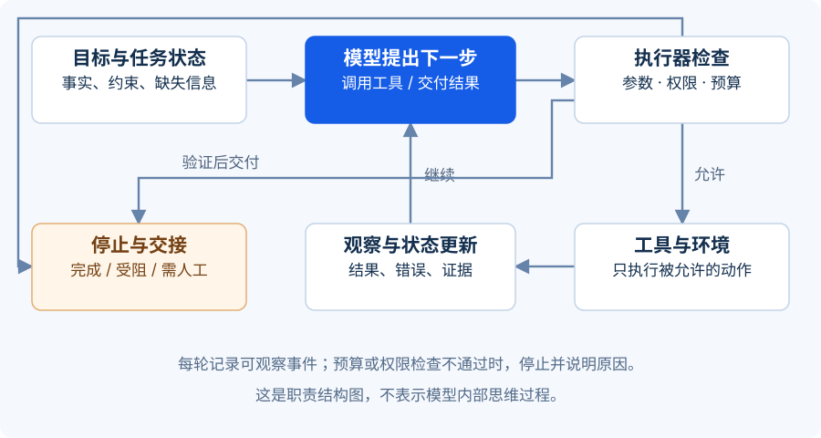

模型不是整个系统
把 Agent 想成一名新加入服务台的同事：他需要知道任务，有工具可用，能看见当前进展，也必须知道哪些操作不能自己决定。仅有“聪明的大脑”，还不足以承担工作。
本课产出：一张结构清单，以及一份能够跨步骤保存的最小任务状态。
继续处理 IT-2048。假设系统找到虚构政策 KB-MFA-03：旧认证设备不可用时，先完成规定的身份核验，再由授权人员审批账户恢复操作。助手的工作是把这条规则准确带入草案，而不是绕过它。
{kind=link}

八个部件及其边界
| 部件 | 在工单助手中负责什么 | 最容易混淆的地方 |
|---|---|---|
| 模型（Model） | 理解描述、选择查询、组织草案 | 模型的判断不等于系统授权 |
| 指令（Instructions） | 定义目标、输出要求和处理边界 | 提示词无法替代工具层权限检查 |
| 工具（Tools） | 读取工单、检索政策、取得原文 | 工具返回内容也可能缺失或错误 |
| 状态（State） | 记录本次任务已知事实、待办及步骤 | 不能只依赖一段越来越长的聊天记录 |
| 记忆（Memory） | 保存有明确用途、可复用的信息 | 不是把所有历史对话永久存起来 |
| 控制循环（Control Loop） | 决定继续、重试、等待或结束 | 需要可执行的上限和停止条件 |
| 环境（Environment） | 工单系统、知识库及其当前状态 | 外部环境可能在任务进行中变化 |
| 权限（Permissions） | 限制谁能访问哪些数据和动作 | 不能靠模型自行宣布“已批准” |
这些是职责划分，不要求部署八个服务。小型实现可以在一个程序中组织它们，但每项责任仍然要有人承担。
状态、上下文和记忆不是同一件事
**上下文（Context）**是模型在当前一次调用中看见的材料。状态是系统为本次任务保存的进展事实；程序可以从状态中挑选必要部分放进上下文。**长期记忆（Long-Term Memory）**则用于跨任务复用信息。
例如：“这次查询已失败一次”属于任务状态；“给模型展示政策的第三条”属于上下文构建；“该处理人员偏好简短草案”可能成为经过确认的长期偏好。
身份核验结果不应被泛化为“这个员工以后都可信”。一次任务中成立的授权、审批及政策版本，不天然适用于下一次任务。第一版助手完全可以不使用长期记忆，先做好任务状态与可追溯证据。
下面是一份示意状态，字段由程序管理，而不是任由模型改写：
{
"ticket_id": "IT-2048",
"phase": "collecting_evidence",
"policy_refs": [],
"missing_fields": ["identity_verification_result"],
"approval_status": "not_requested",
"read_retry_count": 0,
"tool_call_count": 1,
"next_step": "search_policies"
}
其中 approval_status 必须来自审批系统的可信记录。模型可以建议发起审批，却不能直接把它设为 approved。
给工具设计一个可靠的接口
工具不是“一段让 AI 随便执行的代码”。它应该有清楚的名称、参数、返回值和错误类型。例如：
read_ticket(ticket_id)
成功：工单字段、版本、读取时间
失败：NOT_FOUND / FORBIDDEN / TIMEOUT
search_policies(query, category)
成功：候选政策 ID、标题、版本、有效状态
失败：UNAVAILABLE / INVALID_ARGUMENT
每次调用都要检查实际登录人的权限。把 ticket_id 改成另一部门的编号，不应该就能读取对方工单。检索结果也要按访问范围过滤，不能等模型看到内容以后，再要求它“不要泄露”。
账户重置工具不属于本课程第一版的工具集合。未来如果新增，审批必须绑定工单、具体动作、目标账户及有效范围，并在执行时再次检查。审批不能仅仅是一句聊天记录中的“可以”。
把停止条件写进程序
合理的控制循环是：读取当前状态 → 选择可用动作 → 校验 → 执行工具 → 更新状态 → 判断是否结束。
下面是一份设计示例：最多 8 次工具调用；只读请求遇到短暂超时最多重试 1 次；找不到有效政策就转人工；缺少身份核验则生成待核验草案。数值是示例，需要用真实业务数据调整。第12课离线程序采用更简单的规则：默认最多8个循环步骤，包含本地生成、检查和结束动作；工具失败立即停止，不实现本课的自动重试。两种计数口径不能混用。
限制应由运行程序执行。仅在提示词里写“不要反复尝试”，不能保证系统一定停下来。预算耗尽也不是成功：应输出已经确认的事实、未完成的部分和下一步接手方式。
练习：找出结构中的四个问题
某团队这样设计助手：“把所有员工历史对话放进提示词；让模型判断谁有权限；工具失败就一直重试；只要模型说审批通过，就重置账户。”请指出每处问题，并给出替代设计。
展开参考答案 · 先试着自己回答
历史对话不应无差别进入上下文。按任务和权限选择必要内容，跨任务保存的信息需有用途、来源及更新机制。
权限判断应由可信程序和身份系统执行。模型可以识别所需权限，但不能授予权限。
重试必须区分错误类型。只读请求的临时超时可有限重试；没有权限时应停止；可能产生副作用的操作不能在结果未知时盲目重试。
审批状态应由独立审批记录提供，并绑定具体动作。模型生成的文字不是审批凭证。第一版还应直接移除账户重置工具，从能力集合上落实边界。